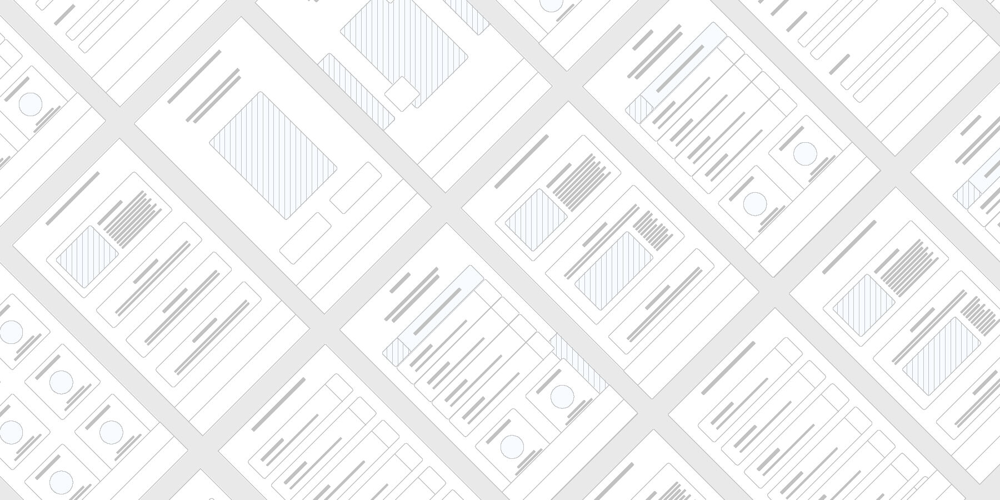
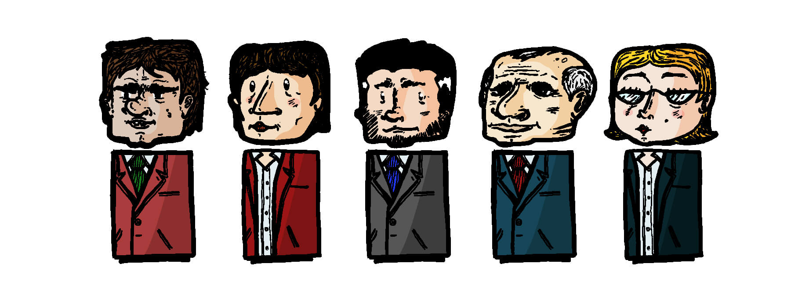
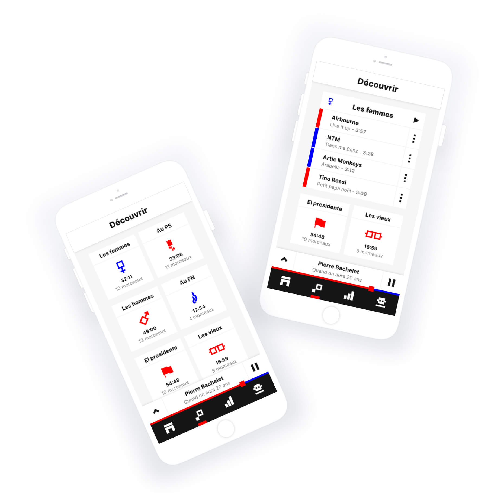
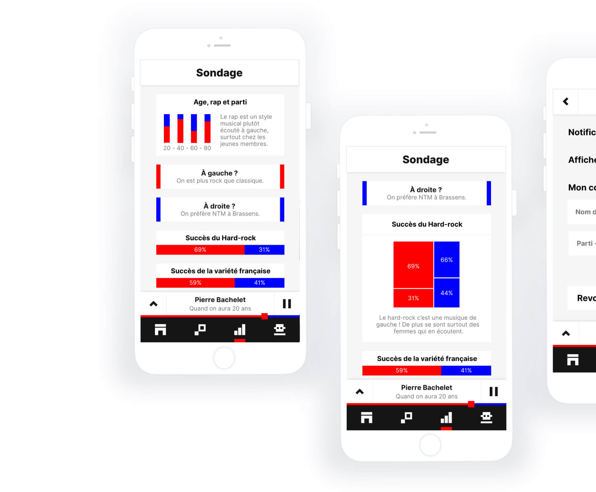

Radiolitics
App design
Année
2019
équipe
Hugo Delmotte
David Déchaux
Martin Delanoë
Antonin Stephany
Lors d'un projet de cours, et dans une équipe de 4 webdesigners, nous étions en charge de réaliser une application musicale. Nous avons décider de créer Radiolitics, une application qui mèle à la fois politique et musique.
Grâce à celle-ci, vous pourrez découvrir les titres préférés des hommes et femmes politiques français. Découvrez nos playlists créées sur mesure, des statistiques étonnantes, mais également votre bord politique en fonction de votre écoute!
Typographie
Oswald
bold
ABCDEFGHIJKLMNOPQRSTUVWXYZ
abcdefghijklmnopqrstuvwxyz
0123456789
abcdefghijklmnopqrstuvwxyz
0123456789
Inter UI
regular - bold
ABCDEFGHIJKLMNOPQRSTUVWXYZ
abcdefghijklmnopqrstuvwxyz
0123456789
abcdefghijklmnopqrstuvwxyz
0123456789
Couleurs
Projet



